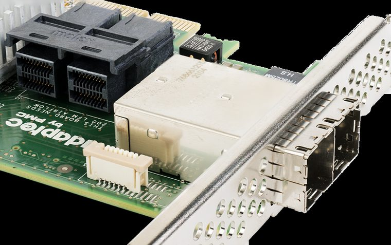

[ CABLE / ADAPTER RECORD // SAS-3 INTERNAL MINI-SAS HD ]
SFF-8643 to SFF-8643 Internal Mini-SAS HD Cable
36-contact SFF-8643 at each end links four SAS lanes between compatible HBA and expander/backplane.

CLASSIFICATION: Data, peripheral, and high-speed cables. Identify protocol, direction, pinout and exact cable revision before connection.
Interface and capability
| Standard / protocol | SAS-3 internal Mini-SAS HD. Connector appearance alone does not establish compatibility. |
|---|---|
| Endpoint / pinout | 36-contact SFF-8643 at each end links four SAS lanes between compatible HBA and expander/backplane. |
| Capability / limits | SAS-3 up to 12 Gbit/s per lane; signal loss and length are assembly-specific, not set by connector shape. |
| Certification / length | Standards define interface requirements, not every assembly’s performance. Certification, mode, current/power rating, direction and maximum length belong to the exact product/revision and complete channel; verify its manufacturer specification. Do not infer certification from connector shape or marketing terminology. |
Compatibility & handling
- Not a SATA-only cable. Confirm HBA/backplane pinout, SAS generation, latch and routed length from vendor manual.
- Inspect connector keying, latch, contact condition, shielding, jacket and model/revision marking. Stop if contacts are bent, loose, scorched, corroded or mismatched.
- Route without tension or sharp bends; follow product bend-radius, strain-relief, current and environmental limits. Test at the intended protocol and mode—physical fit is not a compatibility test.
Sources & further reading
- SCSI Trade Association SASPrimary standards-body or manufacturer reference for SAS-3 internal Mini-SAS HD; confirm exact cable assembly, certification and revision. Original page is gone; this is the Internet Archive’s copy.